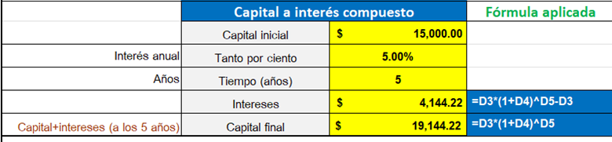

El cálculo del crecimiento de las aportaciones voluntarias em las Administradoras de Fondos para el Retiro (AFORE) en México depende de varios factores, como el monto de las aportaciones, el plazo durante el cual se mantienen invertidas, el rendimiento de las inversiones y las comisiones cobradas por la AFORE.
Hay 2 formas de cálculo a las aportaciones voluntarias, aquellas que suponen una única aportación total y dejarlo hasta que sea considerado. Y las referentes a aportaciones
Para calcular el crecimiento de las aportaciones voluntarias, puedes seguir estos pasos generales:
- Determinar el monto inicial de las aportaciones voluntarias. Por ejemplo, si alguien invierte inicialmente $10,000 pesos.
- Selecciona el periodo de tiempo el cual se mantendrán invertidas las aportaciones voluntarias. Por ejemplo, 5 años.
- Estima un rendimiento promedio anual. -El rendimiento puede variar según los tipos de fondos en los que se invierta (de renta variable, renta fija, etc.) en modo de ejemplo, si se asume en un rendimiento anual del 5%.
- Calcula el crecimiento utilizando la fórmula del interés compuesto.
Monto Final = Monto inicial x (1 + tasa de interés)^número de periodos
Utilizaremos los valores de los ejemplos:
Monto Final = 10,000 x (1.05)^5 = 12’763.78 pesos
- Realiza el cálculo para obtener el monto final. En este caso, el monto final con un rendimiento anual del 5% sería 12763.78 pesos.
-Este cálculo es un ejemplo simplificado y no considera otros factores como las comisiones de la AFORE, impuestos, fluctuaciones en el rendimiento de las inversiones-
Para calcular el crecimiento de las aportaciones voluntarias en una AFORE en México considerando aportaciones mensuales, se puede utilizar la fórmula del valor futuro del interés compuesto para una serie de pagos periódicos.
La fórmula es la siguiente:
FV=P×(r(1+r)n−1)×(1+r)
Donde:
- FV.- Es el valor futuro (monto final)
- P.- Es el monto de la aportación mensual
- r.- es la tasa de interés periódica (tasa de interés anual dividida por 12 meses)
- n.- es el número total de pagos.
FV=1000×(0.005(1+0.005)120−1)×(1+0.005)
EJEMPLO DE CALCULO EN EXCEL.

CONSIDERACIONES PARA TOMAR EN CUENTA
- Flexibilidad de aportaciones: Puedes realizar aportaciones de manera voluntaria en montos variables y según tu capacidad financiera.
No estás obligado a aportar constantemente ni en montos específicos.
- Beneficios fiscales: Las aportaciones voluntarias pueden ser deducibles de impuestos,
lo que puede ayudarte a reducir tu base gravable y pagar menos impuestos al realizar tu declaración anual.
- Rentabilidad y rendimiento: A largo plazo, las aportaciones voluntarias pueden generar rendimientos
adicionales debido a los intereses compuestos, incrementando así tu fondo de retiro.
- Comisiones y costos: Es importante revisar las comisiones y costos asociados con las aportaciones voluntarias,
ya que estos pueden variar entre las diferentes AFORES y planes de inversión disponibles.
- Planes de inversión: Las AFORES suelen ofrecer diferentes opciones de inversión para las aportaciones voluntarias, desde instrumentos conservadores
hasta más arriesgados. Debes considerar tu tolerancia al riesgo y objetivos financieros al elegir un plan.
- Horizonte de inversión: Al ser un fondo destinado para el retiro, es crucial considerar que el dinero aportado en las AFORES estará invertido a largo plazo,
por lo que las fluctuaciones a corto plazo pueden ser normales.
- Liquidez: A diferencia de otras inversiones, el dinero en las AFORES está pensado para el retiro, por lo que puede tener restricciones en cuanto a su disponibilidad.
Antes de realizar aportaciones, es crucial considerar si necesitarás esos fondos antes de jubilarte.
- Asesoramiento profesional: Si tienes dudas sobre cómo funcionan las aportaciones voluntarias o cuál es la mejor estrategia para ti,
buscar asesoramiento profesional puede ser muy útil para tomar decisiones informadas.
- Revisión periódica: Es importante monitorear regularmente el desempeño de tus inversiones
en las AFORES y ajustar tus estrategias si tus objetivos o circunstancias cambian.
- Diversificación: No coloques todas tus inversiones en las AFORES. Es recomendable diversificar tu cartera de inversiones para reducir el riesgo,
considerando otros vehículos de inversión como acciones, bienes raíces, etc.